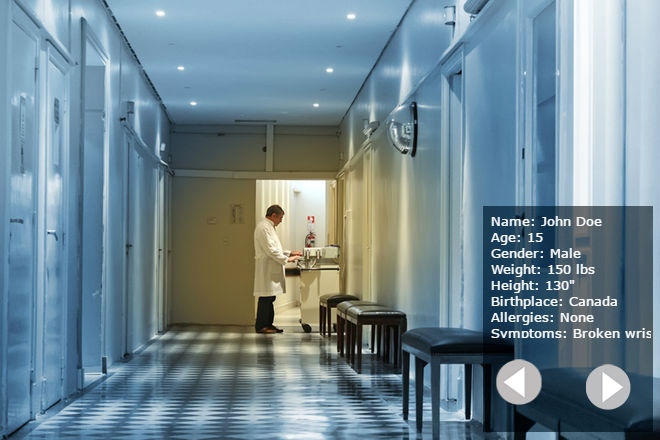

Hospitals and the Microsoft Hololens
Pratham Thukral, David Ding, and Aman Adhav are three engaged students looking to make a difference in the lives of doctors. A common problem that doctors face is that a lot of time is wasted travelling from point A to point B. The program created by the three students was made in the span of 36 hours, at WearHacks, in Kitchener, Waterloo. The Microsoft Hololens is a AR headset, or Augmented Reality. This means that the user can view his/her surroundings with additional graphics.

We have created simple form that nurses, patients, or secretaries can fill out with the patient's information. Their table would then be sent to the Hololens which would then show the doctor their next patient's information. The program also incorporates voice commands such as 'next', 'back', 'show', 'show-image'. All in all, their project will revolutionize hospitals for the better by ensuring the doctor's data is accessible, fast, and practical. A major implementation is to ensure that doctors do not prescribe the wrong medication to a patient considering their allergies, past medical history, etc. With connection to a hospital database, it would be very easy to send an alert to the doctor.
